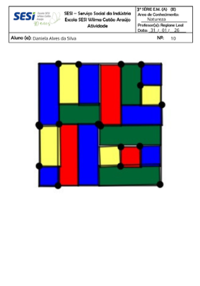
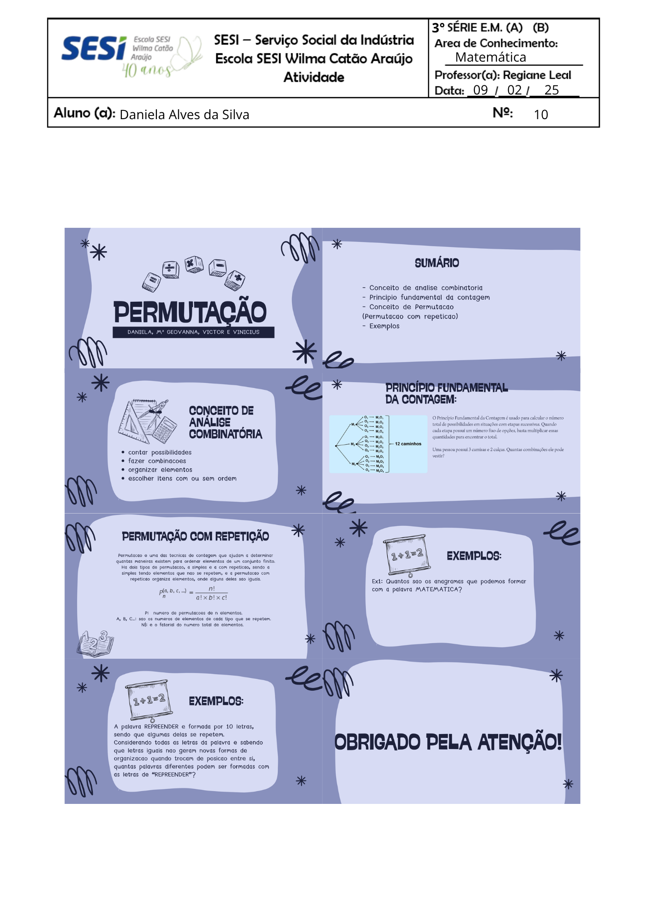
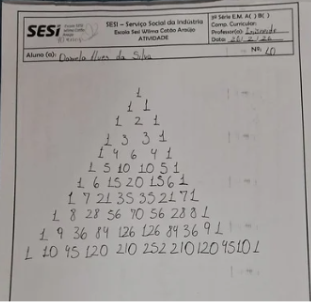
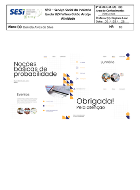
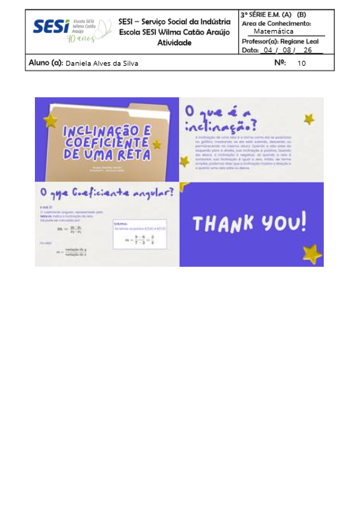

Construção dos gráficos: colunas, barras, setores, linhas e pictograma (13/04)
Mapa mental sobre Estatística (16/04)
Atividade do GeoGebra (31/01)

Trabalhos de Análise Combinatória apresentados nos dias 05/02 e 09/02

Triângulo de Pascal (26/02)

Slides - Grupo 1: Noções Básicas de Probabilidade (09/03)

Construção dos gráficos: colunas, barras, setores, linhas e pictograma (13/04)
Mapa mental sobre Estatística (16/04)
Trabalho em grupo sobre geometria analítica e estudo da reta, com produção de jogos matemáticos. (04/08)
